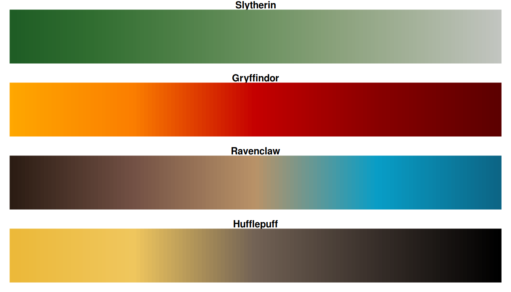

| hp {harrypotter} | R Documentation |
This function creates a vector of n equally spaced colors along the
'HP colour map' of your selection
hp(n, alpha = 1, begin = 0, end = 1, direction = 1, option = "Always", house = NULL) hp_pal(alpha = 1, begin = 0, end = 1, direction = 1, option = "Always", house = NULL) harrypotter(n, alpha = 1, begin = 0, end = 1, direction = 1, option = "Always", house = NULL)
n |
The number of colors (≥ 1) to be in the palette. |
alpha |
The alpha transparency, a number in [0,1], see argument alpha in
|
begin |
The (corrected) hue in [0,1] at which the hp colormap begins. |
end |
The (corrected) hue in [0,1] at which the hp colormap ends. |
direction |
Sets the order of colors in the scale. If 1, the default, colors are ordered from darkest to lightest. If -1, the order of colors is reversed. |
option |
A character string indicating the colourmap from a option to use. Four houses are available: "Gryffindor", "Slytherin", "Ravenclaw" and "Hufflepuff". |
house |
A character string indicating the colourmap from a option to use. This parameter is deprectaed, 'option' should be used instead. Four houses are available: "Gryffindor", "Slytherin", "Ravenclaw" and "Hufflepuff". |
Here are the color scales:

Semi-transparent colors (0 < alpha < 1) are supported only on some
devices: see rgb.
hp returns a character vector, cv, of color hex
codes. This can be used either to create a user-defined color palette for
subsequent graphics by palette(cv), a col = specification in
graphics functions or in par.
Alejandro Jiménez Rico aljrico@gmail.com, Personal Blog
library(ggplot2) library(hexbin) dat <- data.frame(x = rnorm(1e4), y = rnorm(1e4)) ggplot(dat, aes(x = x, y = y)) + geom_hex() + coord_fixed() + scale_fill_gradientn(colours = hp(128, option = 'Always')) pal <- hp(256, option = "Ravenclaw") image(volcano, col = pal)